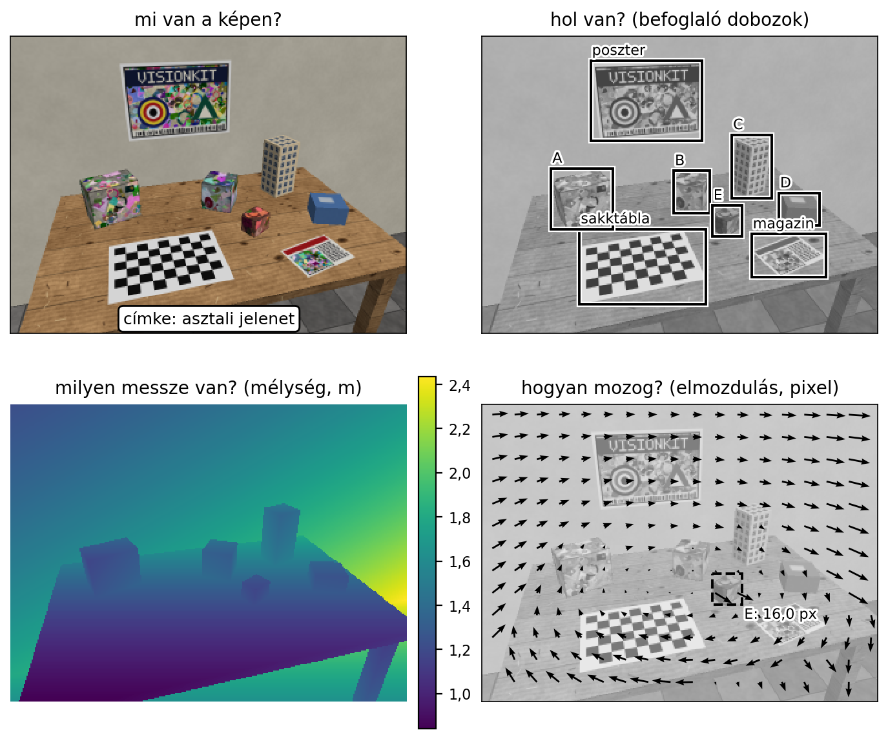
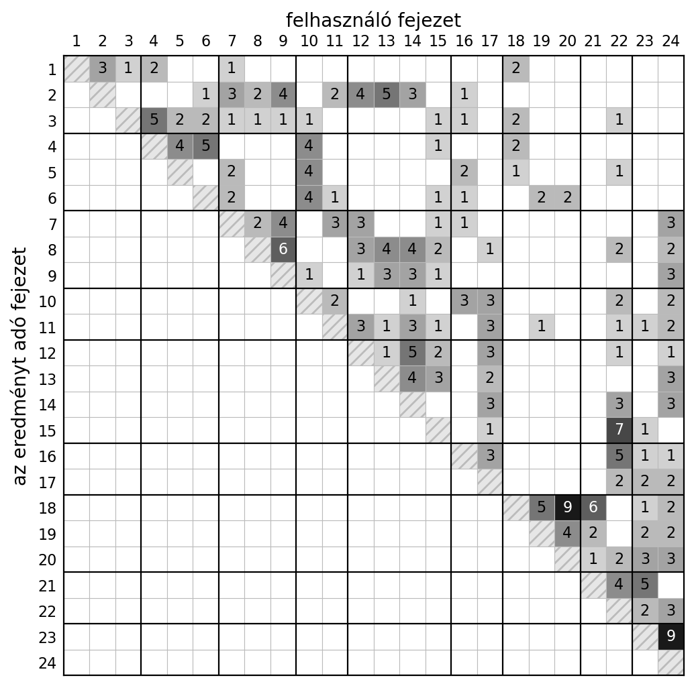
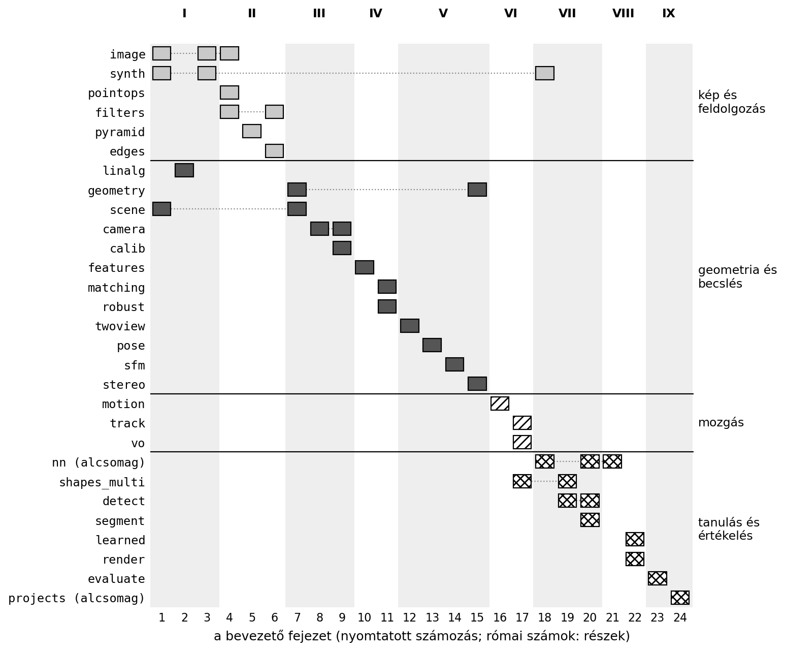
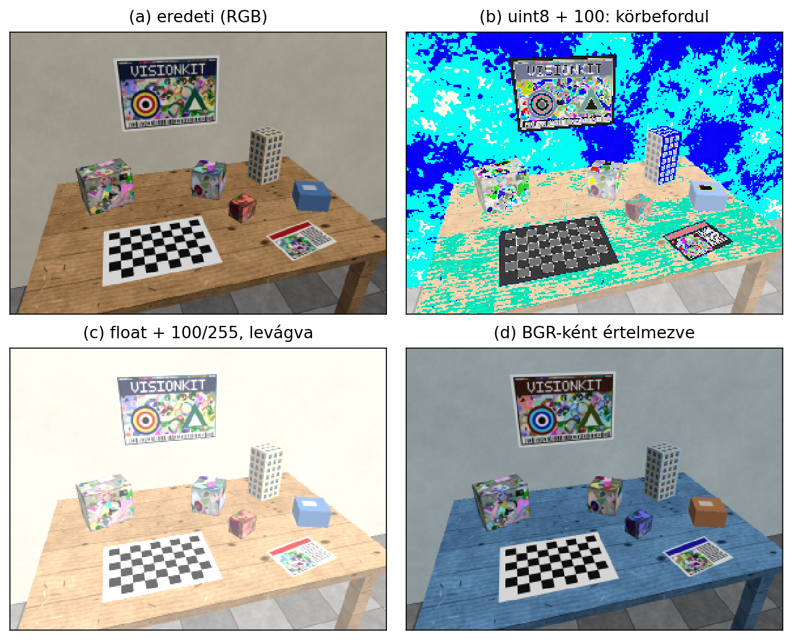

Tegyünk egy asztalra néhány dobozt, egy sakktáblát és egy magazint, akasszunk a falra egy posztert, és készítsünk róla egy 640×480 pixeles képet. A géped ebből pixelt lát, színes képnél pixelenként három számot. Dobozról, távolságról vagy mozgásról ezek a számok közvetlenül semmit nem mondanak. A számítógépes látás (computer vision) feladata, hogy a számtömbből a jelenetre vonatkozó, ellenőrizhető állításokat vezessen le.
Az állítások többsége négy alapkérdés valamelyikére felel:
| Kérdés | Szakmai név | Példa válasz |
|---|---|---|
| Mi van a képen? | felismerés (recognition) | „asztali jelenet”, „sakktábla”, „kör” |
| Hol van? | lokalizáció (localization) | befoglaló doboz, pixelmaszk, kulcspontok |
| Milyen messze, milyen alakú? | geometria | mélység méterben, 3D pontfelhő, kamerapóz |
| Hogyan mozog a kamera és a jelenet? | mozgás | pixelelmozdulás, tárgy pályája, kameraútvonal |
A négy kérdéshez egy ötödik társul, amelyet ez a könyv végig komolyan vesz: mennyire bízhatunk a válaszban? Egy mélységérték bizonytalanság nélkül, egy detektor pontossága tesztadat nélkül keveset ér. Ezért minden módszerhez ismert alapigazságú (ground truth) adat, hibamérték és kísérlet tartozik. Ezt a visszatérő elvet így nevezzük: mérj alapigazsággal.
A végére kamerát kalibrálsz, kis 3D modellt rekonstruálsz képekből, és saját detektáló–követő rendszert építesz, mindegyiket NumPy-ban, tesztekkel és hibaméréssel.
Az alábbi ábra a könyv első futó példáját, a szintetikus asztali jelenetet mutatja négy feldolgozásban. A bal felső panel a teljes kép egyetlen címkéjét adja (osztályozás), a jobb felső az egyes tárgyak befoglaló dobozait (a dobozok az A–E betűket, a sakktáblát, a posztert és a magazint jelölik). A bal alsó panel pixelenként megmutatja, milyen messze van a látott felület (sötét: közel, világos: távol; a skála méterben), a jobb alsó pedig azt, merre és mennyit mozdul el minden pixel, ha a kamera kissé jobbra kerül, és közben a kis E dobozt is arrébb toljuk.

Fontos, hogy itt egyik választ sem algoritmus becsülte: a jelenetet mi magunk rendereljük, ezért minden pixelről pontosan tudjuk, melyik tárgy, milyen mélységben látszik, és hová kerül a következő képen. A könyvben éppen az lesz a feladat, hogy ezeket a válaszokat a képekből becsüljük, majd az itt látható alapigazsággal összevessük.
A nyílmező egy további dolgot is megmutat. A kamera egy az asztal fölötti pont körül fordul el, ezért az ennél távolabbi fal pixelei jobbra, a közelebbi sakktábla pixelei balra mozdulnak, a forgásközéppont közelében lévő B doboz pedig alig. A mozgás tehát mélységről is árulkodik: erre épül a sztereó, a többnézetes rekonstrukció és a kameramozgás becslése.
A könyv 9 részből, 24 fejezetből és 72 alfejezetből áll, nagyjából 160 000 szó terjedelemben.
Miért jön a klasszikus rész a mély előtt? Nem azért, mert a régi módszerek jobbak, hanem mert a mély módszerek építőkövei jórészt klasszikusak, és érteni sokkal könnyebb őket, ha az eredeti helyükön már találkoztál velük. A hálók „konvolúciós” rétege a 4. fejezet korrelációja; a detektorok nem-maximum elnyomása az éldetektálás ötletének rokona; a tanult sztereó a klasszikus költségtérfogatot használja; a mélységbecslő hálót taníthatja a fényességállandóság; a NeRF pedig pontosan a 8. fejezet kameramodelljével indít sugarakat a pixeleken át. A geometria ráadásul pontos kényszereket és ellenőrzési lehetőséget ad, amelyekkel egy tanult modell hibája mérhető.
Rövid történet. Az 1960-as években L. G. Roberts a „blokkvilágban” egyszerű testek térbeli szerkezetét próbálta visszaállítani képekből; D. Marr az 1980-as évek elején a látást egymásra épülő reprezentációk sorozataként írta le; 2012-ben pedig az ImageNet-versenyen egy mély konvolúciós háló látványos javulást ért el, és a felismerési feladatok nagy része a tanult jellemzőkre állt át. Jó áttekintést ad [S-SZELISKI].
A fejezetek erősen egymásra épülnek. Minden alfejezet megnevezi a továbbvitt eredményeit: azokat a definíciókat, képleteket és függvényeket, amelyeket későbbi alfejezetek felhasználnak. A térkép ezeket fejezetenként összesíti: egy nyíl A-ból B-be azt jelenti, hogy B felhasználja A valamelyik eredményét. A szám a kapcsolatot adó eredmény–felhasználó párok száma. Az ábrán a 8. fejezet (a kameramodell) van kiemelve: három korábbi fejezetre épít (2., 3., 7.), és nyolc későbbi épül rá.
Az összes kapcsolat egyszerre a függőségi mátrixon látszik: a sor az eredményt adó, az oszlop a felhasználó fejezet. Minden szám a főátló fölött van, vagyis semmi nem hivatkozik előre. Két dolog feltűnő: az utolsó oszlop sűrű (a záróprojektek a könyv nagy részét összekötik), és a mély látás kezdete, a 18. fejezet csak az 1. és a 3–5. fejezet eredményeire támaszkodik, a geometriáéira nem.

1. A szintetikus asztali jelenet
(visionkit.scene). Egy asztal sakktáblás kalibrációs
mintával, textúrázott dobozokkal és magazinnal, mögötte falon poszter. A
virtuális kamera belső paraméterei ismertek: 640×480 pixelnél a
fókusztávolság
pixel, a főpont (az optikai tengely képe)
.
A renderelő a kép mellé pontos mélységet, tárgyazonosítót, sztereó párt,
optikai áramlást és pontmegfeleltetéseket is ad. A geometriai fejezetek
(7–17. fejezet) és az első két záróprojekt ebből dolgozik.
2. Az alakzat-adatkészlet
(visionkit.synth.shapes_dataset). Kis,
pixeles szürke képek, mindegyiken egy kör, négyzet vagy háromszög zajos,
textúrázott háttéren, címkével, befoglaló dobozzal, maszkkal és a
sokszögek csúcsaival. Elég kicsi ahhoz, hogy a saját NumPy-hálóink a
saját gépeden tanuljanak rajta; a mély látás fejezetei, a követés és a
harmadik záróprojekt ezt (illetve a többobjektumos és mozgó változatát)
használja.
import sys
sys.path.insert(0, "code")
from visionkit import synth
data = synth.shapes_dataset(6, size=64, seed=0)
print(data["images"].shape, data["classes"])
print("címkék:", data["labels"])
print("az 1. kép doboza:", data["boxes"][0].round(1))(6, 64, 64) ('circle', 'square', 'triangle')
címkék: [2 1 1 0 0 0]
az 1. kép doboza: [37.2 43. 53.9 58.7]Az első kép tehát háromszög (2-es címke), a doboza a
bal felső és a
jobb alsó sarok között van. A rögzített seed=0 miatt nálad
is ugyanez jön ki.
Ízelítőnek egy lánc, amelyet a könyv később levezet. A kamera koordinátarendszerében jobbra, lefelé, előre mutat. Legyen egy pont méterben: kicsit jobbra, kicsit fent, 1,25 m mélyen. A lyukkamera a mélységgel oszt, majd a fókusztávolsággal skáláz és a főponthoz tol:
Szavakkal: a pont a képközéptől 80 pixellel jobbra és 40 pixellel feljebb jelenik meg ( lefelé nő). Tegyünk most egy második, azonos kamerát 8 cm-rel jobbra (az alapvonal m). Ebből nézve a pont koordinátája , így . A két kép közötti vízszintes eltolódás, a diszparitás, pixel. Átrendezve:
Két képből tehát a diszparitás mérésével visszakapjuk a mélységet: ez a sztereó látás alapja.
import numpy as np
from visionkit import camera, scene
K = scene.default_K()
X = np.array([[0.2, -0.1, 1.25]])
left = camera.project(X, K, np.eye(3), np.zeros(3))
right = camera.project(X, K, np.eye(3), np.array([-0.08, 0.0, 0.0]))
d = float(left[0, 0] - right[0, 0])
print("bal:", left[0].round(2), " jobb:", right[0].round(2))
print(f"d = {d:.2f} px, Z = f b / d = {500 * 0.08 / d:.3f} m")bal: [399.5 199.5] jobb: [367.5 199.5]
d = 32.00 px, Z = f b / d = 1.250 mA jobb kamera eltolásvektora azért , mert a világ pontjait a kamerába viszi (); ezt a 8. fejezet tisztázza.
A nyitó ábra számai egy rövid szkriptből jönnek. A
scene.render a kép mellett a mélységképet és a
tárgyazonosítók térképét adja; a scene.flow két kameraállás
között a pixelek elmozdulását.
R, t = scene.default_pose()
r = scene.render(R, t, size=(240, 320), ss=2)
depth, ids = r["depth"], r["ids"]
flow, valid = scene.flow((R, t), scene.orbit_pose(azimuth=-9), size=(240, 320),
motion_b=(0.06, -0.05, 0.3))
print("kép:", r["image"].shape, r["image"].dtype)
for k, name in {2: "sakktábla", 11: "B doboz", 12: "C torony", 14: "E doboz"}.items():
mask = ids == k # az objektum látható pixelei
v, u = np.nonzero(mask)
box = f"({u.min() - .5}, {v.min() - .5}, {u.max() + .5}, {v.max() + .5})"
z = np.median(depth[mask]) # milyen messze
move = np.median(np.linalg.norm(flow[mask & valid], axis=1)) # mennyit mozdul
print(f"{name:10s} {box:28s} Z = {z:.2f} m elmozdulás {move:4.1f} px")kép: (240, 320, 3) float64
sakktábla (78.5, 155.5, 180.5, 216.5) Z = 1.07 m elmozdulás 8.0 px
B doboz (154.5, 108.5, 183.5, 142.5) Z = 1.35 m elmozdulás 0.7 px
C torony (201.5, 79.5, 233.5, 130.5) Z = 1.44 m elmozdulás 4.7 px
E doboz (185.5, 136.5, 209.5, 161.5) Z = 1.22 m elmozdulás 16.0 pxA doboz alakú; a azért kell, mert az egész koordináta a pixel közepe. Az E doboz mozdul a legtöbbet, mert a kameramozgáshoz a saját elmozdulása is hozzáadódik.
A 2–23. fejezet alfejezetei ugyanazt a mintát követik (ez a bevezető fejezet és a záróprojektek lazábbak):
| Szakasz | Mire való, hogyan használd |
|---|---|
| Motiváció | konkrét látási helyzet: miért kell az új fogalom |
| Szemlélet | ábra vagy interaktív kísérlet, még képletek előtt |
| Formalizmus (saját című szakaszok) | definíciók és levezetések, a mátrixok méretével |
| Kézi számpélda | kis példa végig, papíron; számold velünk |
| Kód | visionkit-függvény vagy rövid szkript, a futtatott
kimenettel |
| Próbáld ki | 2–4 kísérlet az interaktív ábrával, megfigyelendő jelenséggel |
| Tipikus hibák | tünet → ok → javítás |
| Önellenőrzés | rövid kérdések; válaszok a Megoldások végén |
| Feladatok | A (begyakorló), B (alkalmazó), C (gondolkodtató, programozó) |
| Rövid összefoglaló, Megoldások | a lényeg 100–160 szóban; teljes megoldások |
Az ábrák a HTML-kiadásban többnyire interaktívak (csúszkák, kattintható pontok, lejátszó); a nyomtatott és e-könyv-változat ugyanazt a számítást álló képként mutatja.
Jelölési alapelvek, amelyek az egész könyvben érvényesek (teljes lista: Képlet- és jelölésgyűjtemény, a szakszavak: Fogalomtár):
I[v, u]:
az oszlop (jobbra),
a sor (lefelé); az egész
a pixel közepe;(H, W, 3), RGB-sorrendben, belül
float64 a
tartományban;Feltételezzük: folyékonyan olvasol és írsz egyszerű Python-kódot (a NumPy alapjaival), ismered a vektor, mátrix, mátrixszorzás, inverz, determináns és sajátérték fogalmát, a deriváltat és a parciális deriváltat, a várható értéket és a szórást, valamint a középiskolai geometriát. Képfeldolgozást, projektív geometriát és mélytanulást nem feltételezünk.
A könyv megtanítja, de csak a szükséges mértékig: az SVD-t, a nemlineáris legkisebb négyzeteket és a zajmodellt (2. fejezet), a Fourier-szemléletet, a 3D forgatásokat és a felügyelt tanulás alapjait. Ha ennél nagyobb a hiány, a gyűjtemény többi könyve segít:
| Ha hiányzik | Könyv |
|---|---|
| mátrixok, sajátérték, SVD | Lineáris algebra kezdőknek |
| forgatások, projektív szemlélet | Geometriai algebra kezdőknek |
| gradiens, Jacobi-mátrix | Kalkulus és analízis a gyakorlatban |
| neurális hálók háttere | Neurális hálózatok és CNN-ek, Gépi tanulás és deep learning programozóknak |
| állapotbecslés, követés | Kálmán-szűrő a gyakorlatban |
| transzformerek | LLM-ek és domain-specifikus kis modellek programozóknak |
Továbblépéshez a készülő Optimalizálás és Robotika és SLAM könyv ad mélyebb anyagot; ez a könyv azonban nélkülük is teljes. Hogy neked melyik út és mennyi pótlás javasolt, azt a következő alfejezet, a Tanulási útvonalak és belépő teszt segít eldönteni.
Továbbvitt eredmény. Az alfejezetek állandó szerkezetét és a jelölési alapelveket minden további alfejezet használja. A két futó példa leírására A labor és a visionkit csomag, a Képtranszformálás, rektifikálás és panoráma és a Képosztályozás tanulási feladatként épít.
scene.default_K(size) hívással kérd.I[u, v] indexelés.
Javítás: a tömb mindig I[v, u]; erről a
következő alfejezetek részletesen szólnak.A számítógépes látás a pixelek tömbjéből vezet le ellenőrizhető
állításokat négy alapkérdésben: mi van a képen, hol van, milyen messze
és milyen alakú, valamint hogyan mozog a kamera és a jelenet; ehhez
mindig hozzátartozik a megbízhatóság kérdése. A könyv a képalkotástól a
képfeldolgozáson és a geometrián át a mély látásig halad, mert a mély
módszerek klasszikus építőkövekre épülnek. A két futó példa a pontos
alapigazságú szintetikus asztali jelenet és az alakzat-adatkészlet. Az
alfejezetek állandó szerkezetűek; a jelölések (I[v, u],
lefelé,
)
egységesek.
names = {2: "sakktábla", 4: "poszter", 6: "magazin", 10: "A", 11: "B", 12: "C", 13: "D",
14: "E"}
zs = {name: float(np.median(depth[ids == k])) for k, name in names.items()}
for name, z in sorted(zs.items(), key=lambda item: item[1]):
print(f"{name:10s} {z:.2f} m")sakktábla 1.07 m
magazin 1.12 m
E 1.22 m
A 1.26 m
D 1.28 m
B 1.35 m
C 1.44 m
poszter 1.50 mNem meglepő: a poszter a falon, az asztal mögött van, minden tárgy előtte áll. A medián azért jó összegzés, mert a tárgy szélén tévesen beszámított néhány pixel alig mozdítja el.
Három olvasó: Anna robotkamerát szeretne kalibrálni és 3D modellt építeni; Béla képfeldolgozással évek óta foglalkozik, és a mély módszerek érdeklik; Csilla programozó, de a sajátérték fogalmára már csak halványan emlékszik. Ugyanaz a 72 alfejezet mindhármuknak mást ad, és mást kérdez tőlük. Ez az alfejezet segít kiválasztani az utadat, és egy 20 kérdéses belépő teszttel megmutatja, hol érdemes előbb pótolni. A teszt nem vizsga: nincs rajta mit veszíteni, csak az időt, amelyet egy rosszul megválasztott kezdéssel töltenél.
Az ábra a négy ajánlott útvonalat mutatja alfejezetenként: a sötét cella teljesen olvasandó, a vonalkázottnál elég az önellenőrzés vagy az áttekintés, a fehér kimarad.
| Útvonal | Kinek | Mit tartalmaz | Alfejezet | Hét (heti 3–4) |
|---|---|---|---|---|
| teljes | aki a teljes képet akarja | 1–24. fejezet sorrendben | 72 | 18–24 |
| geometriai | klasszikus 3D látás, robotikai előkészítés | 1–17., majd 23.1, 24.1–24.2 | 52 | 13–18 |
| mély látás | a mély módszerek érdeklik | 1–6., 8.1–8.2, 17.1, majd 18–24. | 44 (+7) | 11–15 |
| gyakorló gyors | ismeri a lineáris algebrát, a képfeldolgozást és a CNN-t | lásd lent | 55 (+15) | 14–19 |
A gyors út lépései: az 1. fejezet; a 2–6. fejezetből először csak az önellenőrző kérdések (ahol 80% alatt maradsz, ott olvasd el az alfejezetet); a 7–17. fejezet; a 18.3; végül a 19–24. fejezet. A mély út zárójeles hét alfejezete a 12–14. fejezet: a 22.2–22.4 előtt olvasd el ezek Szemlélet és Rövid összefoglaló szakaszát. A gyors út a 18.1–18.2 (adatkészlet, tanító ciklus, NumPy-rétegek) ismeretét feltételezi; ha ezek újak, vedd fel őket, mert sok későbbi alfejezet rájuk épül.
A számozás a nyomtatott könyvé: a 8.1 a 8. fejezet első alfejezete, a 3D forgatások és merevtest-transzformációk.
Heti 3–4 alfejezettel a teljes út nagyjából 18–24 hét. Ez tervezési becslés, nem mérés: egy alfejezet átlagosan kétezer szónál hosszabb, és a kísérletekkel és feladatokkal több órányi munka. A sorrend fontosabb, mint a tempó.
Továbblépési szabály. Egy fejezet akkor zárható le,
ha az önellenőrző kérdések legalább 80%-át helyesen válaszolod meg, és
legalább egy C szintű feladat elkészült. Programozós
feladat után a csomag tesztjeinek hibátlanul kell lefutniuk
(python3 code/tests/run_tests.py, lásd A labor és a visionkit csomag).
Ha egy útvonal kihagy fejezeteket, később találkozhatsz olyan eredménnyel, amelyet nem olvastál. A könyv fogalmi gráfjából ez kiszámítható: a mély út például a 24.1 (kalibrált kamera és kiterjesztett valóság) és a 24.2 (rekonstrukció) projektnél több kihagyott alfejezetre is támaszkodna (7.3–7.4, 8.3, 9.2–9.3, 11.2, illetve 10.2–10.3, 11.2, 17.2). Mély úton ezért a 24.3 (detektálás és követés) a természetes záróprojekt, amelyhez egyetlen pótlás kell: a 16.2 (Lucas–Kanade és piramisos követés (KLT)). A 22. fejezet a 10–11. és a 15–17. fejezet eredményeit is használja; ha ez a fejezet fontos neked, olvasd el azok összefoglalóit is.
Oldd meg papíron, segédeszköz nélkül, nagyjából 30 perc alatt; a NumPy-kérdéseket is futtatás nélkül válaszold meg. Minden helyes válasz egy pont. A megoldások az alfejezet végén vannak: ne olvasd előre.
Legyen a = np.arange(12).reshape(3, 4).
a[1, 2]?a[:, 1].shape?np.array([200], np.uint8) + np.array([100], np.uint8)?(np.ones((3, 4)) + np.arange(4)).shape, és mi történik
np.arange(3)-mal?b = a[0:2]; b[0, 0] = 99. Ezután
mennyi a[0, 0]?A négy blokk pontszáma . A szabály:
| Blokk | Alfejezet | Ha ≤ 2 pont, előbb |
|---|---|---|
| M | SVD, rang, null-tér és a homogén legkisebb négyzetek | Lineáris algebra kezdőknek |
| D | Nemlineáris legkisebb négyzetek: Gauss–Newton és Levenberg–Marquardt | Kalkulus és analízis a gyakorlatban |
| P | Zaj, valószínűség és becslés a látásban | Kálmán-szűrő a gyakorlatban, 3. fejezet |
| N | A labor és a visionkit csomag | NumPy-alapok (indexelés, alak, adattípus) gyakorlása |
A mély úton a D és az M blokk különösen fontos: a Képosztályozás tanulási feladatként alfejezettől gradiensekkel és tenzorokkal dolgozunk.
Anna pontjai: , , , , célja a 3D geometria. Az összeg , előpótlás nem kell. Egyetlen blokk hiányos: , ezért a 2.2 alfejezetet alaposan olvassa; mivel , pótló könyv nem szükséges. A célja geometriai, tehát a geometriai út a javaslat: 52 alfejezet, heti 4-gyel , heti 3-mal hét.
Ugyanez a szabály néhány sorban; az interaktív ábra is pontosan ezt számolja.
import math
REMEDY = {"M": ("2.1", "Lineáris algebra"), "D": ("2.2", "Kalkulus és analízis"),
"P": ("2.3", "Kálmán-szűrő 3. fej."), "N": ("1.3", "NumPy-alapok")}
SIZE = {"full": 72, "geom": 52, "deep": 44, "fast": 55}
def recommend(scores, goal="full", knows=False):
weak = [(b, sec, book if scores[b] <= 2 else None)
for b, (sec, book) in REMEDY.items() if scores[b] < 4]
prestudy = sum(scores.values()) < 10
path = "fast" if goal == "full" and knows and not weak else goal
return path, prestudy, weak
for name, s, goal in [("Anna", dict(M=4, D=3, P=5, N=4), "geom"),
("Csilla", dict(M=2, D=3, P=2, N=5), "full")]:
path, prestudy, weak = recommend(s, goal)
n = SIZE[path]
print(f"{name}: {path}, {math.ceil(n / 4)}–{math.ceil(n / 3)} hét, előpótlás: {prestudy}")
for item in weak:
print(" alaposan:", item)Anna: geom, 13–18 hét, előpótlás: False
alaposan: ('D', '2.2', None)
Csilla: full, 18–24 hét, előpótlás: False
alaposan: ('M', '2.1', 'Lineáris algebra')
alaposan: ('D', '2.2', None)
alaposan: ('P', '2.3', 'Kálmán-szűrő 3. fej.')Csillának 12 pontja van, tehát elkezdheti a könyvet, de a 2. fejezet mindhárom alfejezetét alaposan kell olvasnia, a 2.1 és a 2.3 előtt pedig (2 pontos blokkok) a pótló könyvet is.
A könyvhöz négy útvonal ajánlott: teljes (72 alfejezet, 18–24 hét), geometriai (52), mély látás (44, hét további alfejezet áttekintésével) és gyakorló gyors (55, az eszköztár és a képfeldolgozás önellenőrzésével). A belépő teszt négy blokkja (mátrixok, derivált, valószínűség, NumPy) 5–5 pontos; egy blokk 4 ponttól van meg, egyébként a 2.1, 2.2, 2.3, illetve 1.3 alfejezet alapos olvasása, 2 pontig pótló könyv is kell; 10 pont alatt a pótlás megelőzi a kezdést. Egy fejezet akkor zárható, ha az önellenőrzés legalább 80%-ban helyes, és egy C feladat elkészült.
Továbbvitt eredmény. A belépő teszt blokkjai és a pótlási javaslatok vezetnek tovább ide: SVD, rang, null-tér és a homogén legkisebb négyzetek, Nemlineáris legkisebb négyzetek: Gauss–Newton és Levenberg–Marquardt, Zaj, valószínűség és becslés a látásban és Képosztályozás tanulási feladatként.
| Kérdés | Válasz | Indoklás röviden |
|---|---|---|
| M1 | , | |
| M2 | : ; nem értelmes | a belső méreteknek egyezniük kell () |
| M3 | és | 90°-os forgatás: ortogonális, területet és irányítást tart |
| M4 | 1 és 3 | sajátvektorok és |
| M5 | és | merőleges egységvektorok, jobbkéz-szabály |
| D1 | 30 | |
| D2 | ||
| D3 | 15 | láncszabály: |
| D4 | a derivált | |
| D5 | 1,01 | |
| P1 | 0,3 és 0,21 | , variancia |
| P2 | 5 | a varianciák adódnak össze: |
| P3 | 0,5 | |
| P4 | kb. 68% és 95% | a normális eloszlás nevezetes értékei |
| P5 | kb. 15% | Bayes-tétel: |
| N1 | 6 | az 1. sor (nullától): 4, 5, 6, 7 |
| N2 | (3,) |
egy oszlop egydimenziós tömb |
| N3 | [44] |
a uint8 256-tal körbefordul:
|
| N4 | (3, 4); a másik hiba |
a sugárzás az utolsó tengelyeket igazítja |
| N5 | 99 | a szeletelés nézetet ad, nem másolatot |
A numerikus válaszokat futtatással is ellenőrizheted:
import numpy as np
g = lambda u, v: u**2 * v + 3 * v
h = 1e-6
grad = [(g(1 + h, 2) - g(1 - h, 2)) / (2 * h), (g(1, 2 + h) - g(1, 2 - h)) / (2 * h)]
print("M1", np.array([[2, 1], [0, 3]]) @ [1, 2], " M4", np.linalg.eigvalsh([[2, 1], [1, 2]]))
print("D2", np.round(grad, 4), " D3", round((g(2 + 2*h, 1 + h) - g(2 - 2*h, 1 - h)) / (2*h), 4))
p = np.linalg.lstsq([[1.0], [2.0]], [3.0, 0.0], rcond=None)[0]
print("D4", p, " D5", round(np.sqrt(1.02), 5))
print("P5", round(0.01 * 0.9 / (0.01 * 0.9 + 0.99 * 0.05), 4),
" P4", [round(math.erf(k / math.sqrt(2)), 4) for k in (1, 2)])
a = np.arange(12).reshape(3, 4)
b = a[0:2]
b[0, 0] = 99
print("N3", np.array([200], np.uint8) + np.array([100], np.uint8), " N5", a[0, 0])M1 [4 6] M4 [1. 3.]
D2 [4. 4.] D3 15.0
D4 [0.6] D5 1.00995
P5 0.1538 P4 [0.6827, 0.9545]
N3 [44] N5 99def grade(answers):
truth = {"M1": [4, 6], "D2": [4, 4], "P2": np.hypot(3, 4), "P5": 0.009 / 0.0585}
hits = {}
for key, value in truth.items():
ok = np.allclose(answers.get(key, np.nan), value, atol=0.005)
hits[key[0]] = hits.get(key[0], 0) + int(ok)
return hits
print(grade({"M1": [4, 6], "D2": [4, 7], "P2": 7, "P5": 0.15})){'M': 1, 'D': 0, 'P': 1}A D2 gradiense rossz, a P2-ben a szórásokat adtuk össze; a P5 a -ös tűrésen belül van.
Kipróbálsz egy képfeldolgozó trükköt: a képhez hozzáadsz 100-at, hogy
világosabb legyen, és ehelyett türkiz-kék foltok jelennek meg a falon.
Vagy a kód lefut, de a doboz a kép rossz sarkában van, mert felcserélted
a sort és az oszlopot. Ezek nem a látás nehéz problémái, hanem a
képtömb kezelésének hibái, és órákat tudnak elvenni.
Ebben az alfejezetben felállítjuk a labort, rögzítjük, hogyan tárol egy
képet a könyv minden programja, és megismerjük a kísérő
visionkit csomagot. Az itt rögzített szabályokra minden
későbbi alfejezet épít.
A könyv saját, NumPy-ra épülő csomagja, a visionkit a
fejezetekkel együtt bővül. Nem helyettesíti a nagy könyvtárakat: azért
írjuk meg magunk, hogy a módszerek belseje látható, tesztelhető és
módosítható legyen. Az ábra megmutatja, melyik modul melyik fejezetnél
jelenik meg.

A térkép átlósan halad: a kép- és szűrőmodulok az elején, a geometria a közepén, a mély látás a végén épül fel. A későbbi modulok a korábbiakat használják (a kalibráció a kameramodellt és a homográfiát, a detektor a hálórétegeket és az alakzat-adatkészletet).
| Modul | Tartalom |
|---|---|
image, pointops |
beolvasás, mentés, típusok, szín, zaj, hibamértékek; pontműveletek, hisztogram |
filters, pyramid, edges |
szűrés, piramisok és Fourier-segédek, élek, morfológia, Hough |
synth, shapes_multi |
tesztképek, az alakzat-adatkészlet és többobjektumos, mozgó változata |
linalg, geometry, camera,
calib |
SVD-s és iteratív becslés, homográfia, kameramodell, kalibráció |
scene |
a szintetikus asztali jelenet pontos alapigazsággal |
features, matching,
robust |
jellemzőpontok, illesztés, robusztus becslés |
twoview, pose, sfm,
stereo |
epipoláris geometria; trianguláció és kamerapóz; rekonstrukció; sztereó |
motion, track, vo |
optikai áramlás, követés, vizuális odometria |
nn/ |
NumPy-neurális hálók alcsomagja: rétegek, veszteségek, optimalizálók, tanítás, U-Net, figyelem |
detect, segment, learned |
detektálás; szegmentálás és kulcspontok; tanult mélység és jellemzők |
render, evaluate |
neurális megjelenítés, metrikák |
projects/ |
a záróprojektek alcsomagja |
Egy modult mindig a csomagból importálunk, például
from visionkit import image, filters, és a függvény
dokumentációját a help(image.to_uint8) hívás mutatja. A
pontos, aktuális tartalmat a csomag leírása
(code/README.md) és a modulok forrása adja; érdemes
belenézni, mert rövid és olvasható kód.
Python 3.11 vagy újabb kell. A kötelező csomagok: NumPy (a
számítások), matplotlib (ábrák), Pillow (képfájlok), és SciPy
(opcionális segédfüggvényekhez és összevetésekhez, saját
tartalékmegoldás mellett). A könyv mappájában (ahol a
requirements.txt és a code/ van):
python3 -m venv .venv # elkülönített környezet
source .venv/bin/activate # Windows: .venv\Scripts\activate
python -m pip install -r requirements.txt
python code/tests/run_tests.py # a visionkit tesztjei (unittest, pytest nem kell)A futtatás végén OK sor jelzi, hogy minden teszt
sikeres; hibánál a kimenet megnevezi a tesztet. Ha egy csomag hiányzik,
ModuleNotFoundError jelzi: ellenőrizd, hogy az aktivált
környezetben telepítettél-e. A könyv szkriptjei a könyv mappájából
futnak, és a code/ mappát veszik fel a keresési útra.
Opcionális eszközök. Az OpenCV, a scikit-image és a
PyTorch nem része a kötelező környezetnek. Ahol a
szöveg összevetést vagy kitekintést ad velük, a kódblokk első sora
# részlet: ezt a könyv ellenőrzése nem futtatja, kimenetet
sem közlünk hozzá. Ha telepíted őket, a saját verziód dokumentációját
tekintsd mérvadónak (ellenőrizendő: a paraméterek és alapértékek
verziónként eltérhetnek).
Definíció. A digitális kép egy NumPy-tömb.
Szürkeárnyalatos képnél az alak
(magasság, szélesség), színesnél
.
Az
képpont értéke I[v, u]: előbb a sor
(,
lefelé nő), utána az oszlop
(,
jobbra nő). Az egész
a pixel közepe.
Szavakkal: a képpont koordinátáját
sorrendben mondjuk, a tömböt [v, u] sorrendben indexeljük.
A kép matematikai értelemben nem „mátrix, amelyet jobbról vektorral
szorzunk”: rácsra mintavételezett függvény, amelyet tömbben
tárolunk.
Adattípus. A fájlok többnyire 8 bites egészeket
(uint8, 0–255) tárolnak, a könyv viszont belül
float64 értékekkel számol a
tartományban:
Visszaalakításkor először a
tartományra vágunk, aztán kerekítünk (nem csonkolunk);
ezt teszi az image.to_uint8. A uint8
aritmetika ugyanis nem telít, hanem 256-tal körbefordul. A pixelérték
ráadásul nem arányos a fényességgel (gamma-kódolás); ezzel a Szín: színterek, gamma és fehéregyensúly alfejezet
foglalkozik.
Csatornasorrend. A könyvben a színcsatornák
sorrendje RGB, a csatorna az utolsó tengely:
I[v, u, 0] a piros. Az OpenCV beolvasója viszont
BGR-sorrendet ad; a két konvenció keverése nem okoz hibaüzenetet, csak
felcserélt pirosat és kéket:
# részlet
import cv2
bgr = cv2.imread("asztal.png") # (H, W, 3) uint8, BGR sorrend
rgb = cv2.cvtColor(bgr, cv2.COLOR_BGR2RGB) / 255.0 # RGB, float64, [0, 1](ellenőrizendő: az OpenCV telepített verziójának függvényei és alapértékei).
Hálók tenzora. A mély látás fejezeteiben a képek
kötegét
alakban (köteg, csatorna, magasság, szélesség) kapja a háló. A
képekből tengelyátrendezéssel áll elő, és ekkor az elem:
x[n, c, v, u].
Az alábbi ábra a két leggyakoribb csapdát mutatja a jelenetképen. A (b) panelen a csatornaértékek mintegy 30%-a túlcsordult, és sötétbe fordult; a (c) panel a helyes, levágásos világosítás; a (d) panelen a piros és a kék csatorna cserélődött fel, ezért az asztal kékes, a kék doboz barnás.

A két futó példát (lásd A könyv célja, felépítése és használata) a csomag állítja elő, így nincs letöltendő adat, és az alapigazság pontos:
scene.render(R, t, size=(H, W), ss=2) a jelenet képét,
mélységét (depth), tárgyazonosítóit (ids) és a
kamera
mátrixát adja; a scene.default_pose() a szokásos nézőpont.
Az ss a szupermintavétel mértéke (simább élek, lassabb
futás).synth.shapes_dataset(n, size=64, seed=0)
alakzatképet ad címkékkel, dobozokkal, maszkokkal és csúcsokkal.Reprodukálhatóság. Minden véletlen rögzített magból
jön: vagy seed paraméterrel, vagy
rng = np.random.default_rng(seed) objektummal, amelyet a
függvény megkap. A szöveg mintaszámai és az ábrák ugyanabból a
számításból származnak; az ábraszkriptek ellenőrzik
(assert) a szövegben idézett értékeket. Ha a te géped az
utolsó tizedesjegyben eltér, az a lebegőpontos számításból adódhat; a
nagyobb eltérés hibát jelez.
Legyen a kép 3 soros és 4 oszlopos (, ):
I[1, 2] = 70. A felcserélt I[2, 1] a 100-as,
egy másik pixel.I[2, 3] = 200. A felcserélt I[3, 2]
hibát dob, mert csak 0–2 sorindex van. A néma hiba veszélyesebb a
hangosnál.uint8-ban:
,
ami
-ra
fordul: a legvilágosabb pixelből sötét lesz.astype) 254-et.Először a kézi példa ellenőrzése:
import sys
sys.path.insert(0, "code")
import numpy as np
from visionkit import image, scene, synth
I = np.array([[10, 20, 30, 40], [50, 60, 70, 80], [90, 100, 110, 200]], dtype=np.uint8)
H, W = I.shape
u, v = 2, 1
print("H, W =", H, W, " I[v, u] =", I[v, u], " I[u, v] =", I[u, v])
print("kilapítva:", I.ravel()[v * W + u], " I[2, 3] =", I[2, 3])
J = image.to_float(I)
print("float:", J.dtype, J[2, 3].round(4))
print("uint8 + 102:", (I + np.uint8(102))[2, 3], " float + 0.4:", image.to_uint8(J + 0.4)[2, 3])
x = np.array([0.5, 0.999])
print("to_uint8:", image.to_uint8(x), " csonkolva:", (x * 255).astype(np.uint8))H, W = 3 4 I[v, u] = 70 I[u, v] = 100
kilapítva: 70 I[2, 3] = 200
float: float64 0.7843
uint8 + 102: 46 float + 0.4: 255
to_uint8: [128 255] csonkolva: [127 254]Most a jelenetkép: elmentjük, visszatöltjük, és megnézzük a csatornákat és a tenzoralakot. A pixel a poszter céltáblájának piros gyűrűjében van.
import tempfile
from pathlib import Path
img = scene.render(*scene.default_pose(), size=(240, 320), ss=2)["image"]
with tempfile.TemporaryDirectory() as folder:
path = Path(folder) / "asztal.png"
image.save(path, img) # [0, 1] float -> 8 bites PNG
back = image.load(path) # PNG -> float64, [0, 1]
print(img.shape, img.dtype, "->", back.shape, back.dtype)
print("legnagyobb eltérés:", round(float(np.abs(back - img).max()) * 255, 2), "szint")
u, v = 108, 60
print("RGB:", img[v, u].round(3), " BGR-ként:", img[v, u][::-1].round(3))
batch = np.stack([img, img]).transpose(0, 3, 1, 2) # (N, H, W, 3) -> (N, C, H, W)
print("köteg:", batch.shape, " piros csatorna:", batch[0, 0, v, u].round(3))(240, 320, 3) float64 -> (240, 320, 3) float64
legnagyobb eltérés: 0.5 szint
RGB: [0.548 0.079 0.078] BGR-ként: [0.078 0.079 0.548]
köteg: (2, 3, 240, 320) piros csatorna: 0.548A mentés–visszatöltés legfeljebb fél szintnyi (a kerekítésből adódó) eltérést okoz. Végül a reprodukálhatóság:
a = synth.shapes_dataset(4, seed=0)["images"]
b = synth.shapes_dataset(4, seed=0)["images"]
c = synth.shapes_dataset(4, seed=1)["images"]
print("azonos mag:", np.array_equal(a, b), " más mag:", np.array_equal(a, c))
rng = np.random.default_rng(7)
noisy = image.add_gaussian_noise(img, 0.05, rng)
print("zaj szórása:", round(float((noisy - img).std()), 4),
" tartomány:", noisy.min().round(2), noisy.max().round(2))azonos mag: True más mag: False
zaj szórása: 0.05 tartomány: -0.12 1.0Az azonos mag bitre azonos képeket ad. A zaj hozzáadása nem vág: az
érték kiléphet a
tartományból, ezért mentés előtt vágni kell (a save ezt
megteszi).
IndexError. Melyik hibát venné észre egy teszt, amely
négyzetes képen fut?IndexError fekvő képen.
Ok: I[u, v] a helyes I[v, u]
helyett. Javítás: tömböt mindig [v, u]
sorrendben indexelj, és nem négyzetes képen tesztelj.uint8 aritmetika körbefordulása.
Javítás: to_float → számítás →
to_uint8.np.random.default_rng()). Javítás:
rögzített mag, amelyet a kód paraméterként továbbít.float képet 0–255 tartományban
kezelsz, és minden küszöb „rossz”. Ok: a
és a
skála keverése. Javítás: belül mindig
;
uint8 csak be- és kimenetként.uint8 kép közvetlen összeadása?I[0, 3]
értékét, a
képpont értékét, és a 7-es sorszámú elem (soronkénti kilapításban)
koordinátáját.uint8 pixelből, ha uint8-ban hozzáadsz 10-et,
illetve ha floatban, levágva?float64 vagy az értékek
kilógnak a
tartományból.A könyv környezete Python 3.11+, NumPy, matplotlib, Pillow és
opcionálisan SciPy; a tesztek a
python code/tests/run_tests.py paranccsal futnak, az OpenCV
és a PyTorch nem kötelező. A kép tömbje
vagy
,
RGB sorrendben, belül float64 a
tartományban; a
pixel I[v, u], ahol
lefelé nő, és az egész koordináta a pixel közepe. A uint8
aritmetika körbefordul, ezért to_float, számítás,
to_uint8. A hálók tenzora
.
A visionkit moduljai a fejezetekkel épülnek fel, a véletlen
mindig rögzített magú.
Továbbvitt eredmény. A képtömb-konvenciókra
(I[v, u], float64 a
tartományban, RGB) Szenzor, mintavétel, kvantálás
és zaj, a Pontműveletek és hisztogram és a
Konvolúció és korreláció épít; a
visionkit felépítését és a tesztfuttatást minden kódot
tartalmazó alfejezet használja, kiemelten a Konvolúciós háló NumPy-ban: rétegek és
visszaterjesztés a NumPy-háló moduljaival.
I[0, 3] = 40; a
képpont I[2, 1] = 100; a 7-es sorszám:
,
,
tehát
(az értéke 80).uint8-ban
;
floatban levágva 255.def describe(a):
if a.dtype != np.float64 or a.min() < 0 or a.max() > 1:
raise ValueError("float64 kép kell a [0, 1] tartományban")
if a.ndim == 2:
kind = "szürke"
elif a.ndim == 3 and a.shape[2] == 3:
kind = "színes"
else:
raise ValueError(f"váratlan alak: {a.shape}")
return kind, "W =", a.shape[1], "H =", a.shape[0]
print(describe(img))
try:
describe(I)
except ValueError as error:
print("hiba:", error)('színes', 'W =', 320, 'H =', 240)
hiba: float64 kép kell a [0, 1] tartománybanJ[v', u'] = I[H - 1 - u', v']. Ez a sorrend
megfordítása, majd transzponálás:J90 = I[::-1].T
print(J90.shape)
print(J90)
ok = all(J90[vn, un] == I[H - 1 - un, vn] for vn in range(W) for un in range(H))
print("egyezik a képlettel:", ok, " np.rot90:", np.array_equal(J90, np.rot90(I, k=-1)))(4, 3)
[[ 90 50 10]
[100 60 20]
[110 70 30]
[200 80 40]]
egyezik a képlettel: True np.rot90: TrueFigyeld meg: a képletben matematikai sorrendet használunk (), a tömbben viszont a sorindex az első.
I[3, 10]; az alak
.np.stack(képek).transpose(0, 3, 1, 2); az elem
x[n, c, v, u].